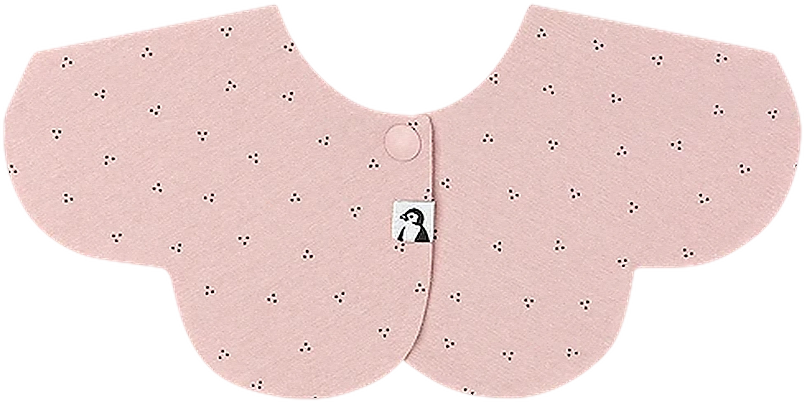

브라우저에서 바로, 설치 없이
우리 아기에게 어울리는
코니빕을 미리 만나보세요.
카메라 영상은 서버에 저장하거나 전송하지 않아요. 기기 안에서 얼굴과 어깨 위치만 실시간으로 읽어 착용 모습을 보여줍니다.
기기 내 처리회원가입 없음iOS · Android · PC
LIVE FIT

얼굴과 어깨가 함께 보이면
자동으로 착용 위치를 찾아요.
TECHNOLOGY
영상은 남기지 않고,
필요한 위치만 읽습니다.
어깨 자세와 얼굴의 3D 기준점을 함께 읽어 몸의 방향과 목 위치를 계산합니다. 턱받이는 제품 원본 비율과 실루엣을 그대로 유지한 채 몸의 기울기에 맞춰 합성하고, 얼굴은 자연스럽게 앞에 보이도록 처리합니다. 모든 계산은 브라우저 안에서 끝납니다.
- 01카메라 입력브라우저 권한으로만 접근
- 02기기 내 인식Pose + Face 3D Landmarks
- 03원본 비율 합성Product Cutout · Occlusion · Canvas
현재 버전은 정면·상반신 기준의 2D 핏 검증용입니다. 측면 회전, 원단의 실제 접힘, 목 뒤 가림까지 표현하려면 제품별 3D/세그멘테이션 에셋이 추가로 필요합니다.